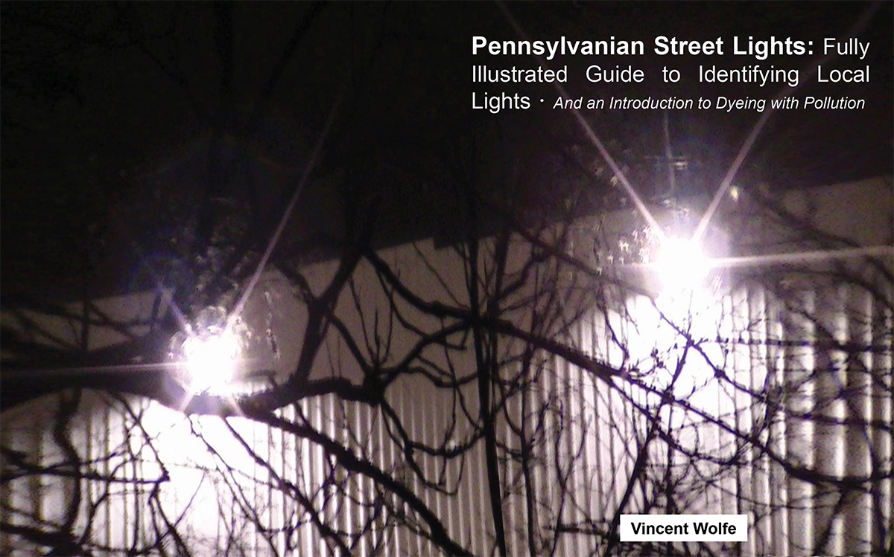

Light Pollution

Work from 2024.
A field guide to light pollution and what is visible at night.
Images on pages 3, 6, and 7 are sourced from public domain image archives. All other photos are original.
A field guide to light pollution and what is visible at night.
Images on pages 3, 6, and 7 are sourced from public domain image archives. All other photos are original.